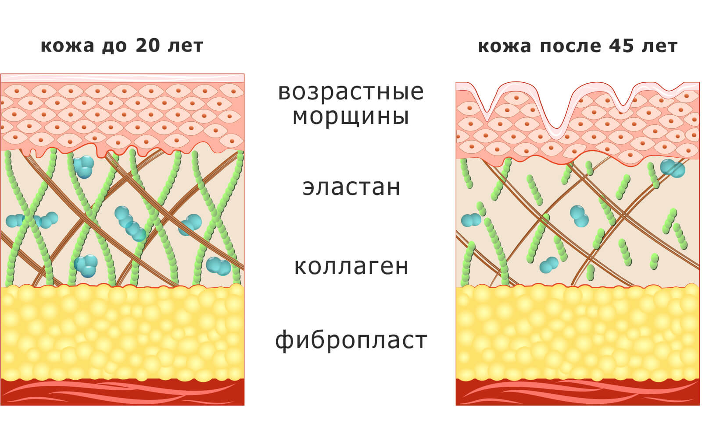
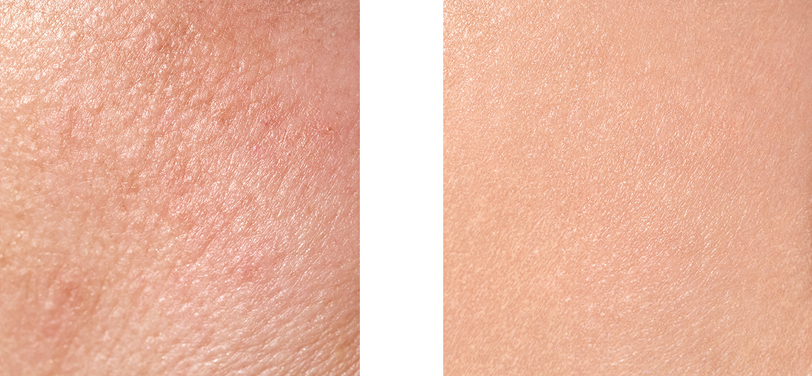

Секрет продукта Азенуа заключен в синергии двух компонентов, усиливающих действие друг друга: гидролизованного высококачественного бразильского коллагена и экстракта уникального растительного вещества кигелина, имеющего многофункциональное воздействие на кожу.
Влияние на кожу
продукта Азенуа®

Коллаген поддерживает здоровое состояние фибробластов, ответственных за эластичность и упругость кожи. Кигелин заставляет фибробласты взяться за работу и снова начать синтезировать молодой коллаген, что в комплексе обеспечивает максимальный положительный эффект.
Фибробласты — это зародышевые клетки соединительной ткани организма. Они участвуют в процессах регенерации и синтеза белков, наиболее важных для омоложения клеток дермы. А поскольку фибробласты напрямую влияют на выработку коллагена и гиалуроновой кислоты, препараты с экстрактом кигелии проявляют выраженный эффект лифтинга. Эта способность объясняется присутствием стероидных сапонинов (стигмастерин, р — ситостерин, эстрон), обладающих гормоноподобным действием[4].

Азенуа® — это комплексный продукт, который демонстрирует эффект лифтинга за счет сохранения структуры актинового цитоскелета с удержанием его формы и увеличения гидрофильности (способности удерживать влагу) матриксовых пространств. Он также помогает поддерживать суставы и связки в рабочем состоянии.

Кстати, есть еще один важный бонус от Азенуа. Продукт не только работает над стимуляцией и поддержкой фибробластов кожи, связок и суставов, но и незаменим в период похудения. Ведь, во-первых, полипептиды ускоряют обмен веществ, а во-вторых, добавки с коллагеном и кигелином дают возможность коже быстрее подтягиваться при похудении, что доказано клиническими исследованиями[7].
Литература:
1. Baziwane D., He Q.: Gelatin: the paramount food additive. Food Rev. Int. 19, 423-435, (2003). , Moskowitz R.W.: Role of collagen hydrolysate in bone and joint disease. Semin. Arthritis Rheum. 30, 87-99, 2000).
2. Zague V.: A new view concerning the effects of collagen hydrolysate intake on skin properties. Arch. Derm. Res. 300, 479-483, (2008).
3. https://www.thieme-connect.com/products/ejournals/abstract/10.1055/s-0036-1578759), https://www.semanticscholar.org/paper/KIGELIA-AFRICANA%3A-AN-EPHEMERAL-GLANCE-Elhasan-Mohammed/fc3b6075b452a5194a72bffcf4409cd5c2a672a9
4. Christian Agyare, Newman Osafo, inMedicinal Plant Research in Africa, 2013.
5. https://www.semanticscholar.org/paper/Comprehension-of-Phytochemical-and-pharmacological-KolheRohini-Dr.ChaudhariRajesh /6febcc5bb9e40018374c30ed5d832ac8af9ae8c9
6. https://cyberleninka.ru/article/n/izuchenie-gidroliza-kollagensoderzhaschego-syrya-proteoliticheskimi-fermentami/viewer
7. Veldhorst, MAB и др. Clinical Nutrition. 2009; 28 (2): 147–155.